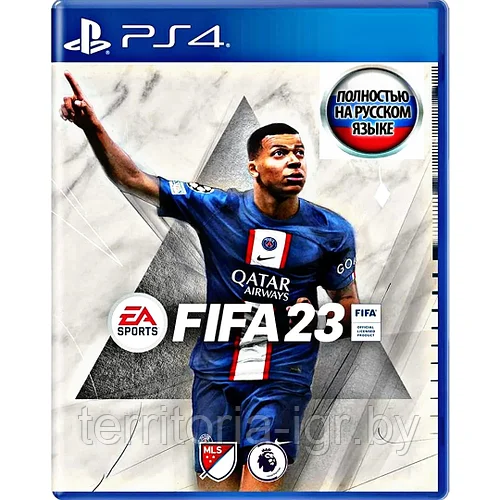
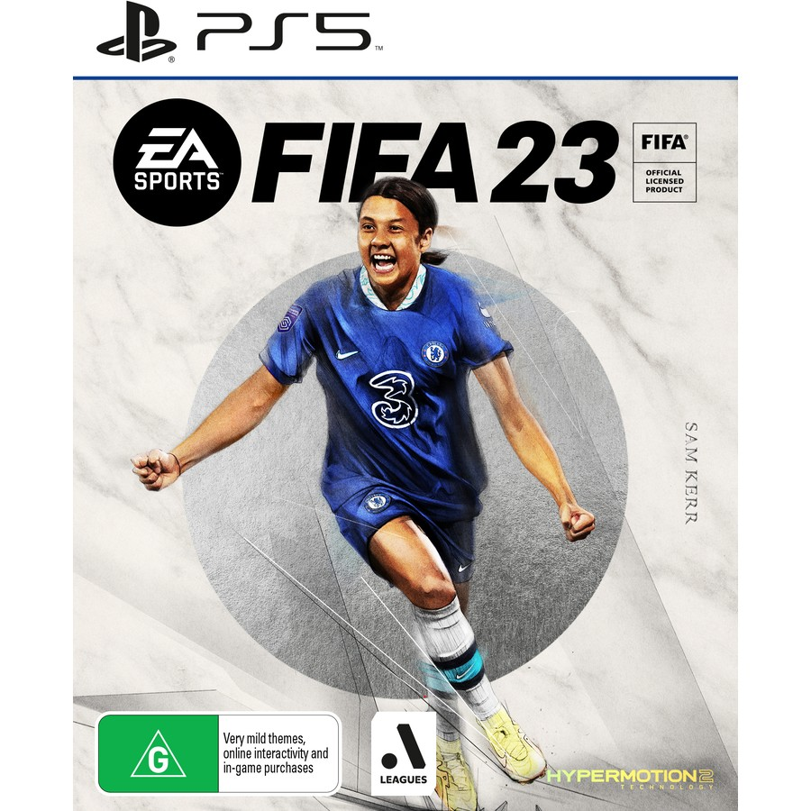

Ван Дейк родился 8 июля 1991 года в маленьком голландском городке Бреда, населением чуть более 170 тысяч жителей. Его рост — 193 сантиметра, а вес — 90 килограммов. Сейчас его зарплата составляет 57 миллионов фунтов, но так было не всегда. Позиция:Центральный защитник
французский футболист, нападающий клуба «Пари Сен-Жермен» и капитан сборной Франции. Признаётся одним из лучших игроков мира. Чемпион мира и лучший молодой игрок чемпионата мира 2018.

компьютерная игра в жанре спортивного симулятора, 30-я в серии FIFA, разработанная компанией EA Vancouver под издательством Electronic Arts. Видеоигра вышла на ПК, PlayStation 4, PlayStation 5, Xbox One, Xbox Series X/S и Nintendo Switch 30 сентября 2022 года[2]. FIFA 23 является заключительной игрой в серии, разработанной Electronics Arts; в 2022 году EA и FIFA объявили о завершении сотрудничества,